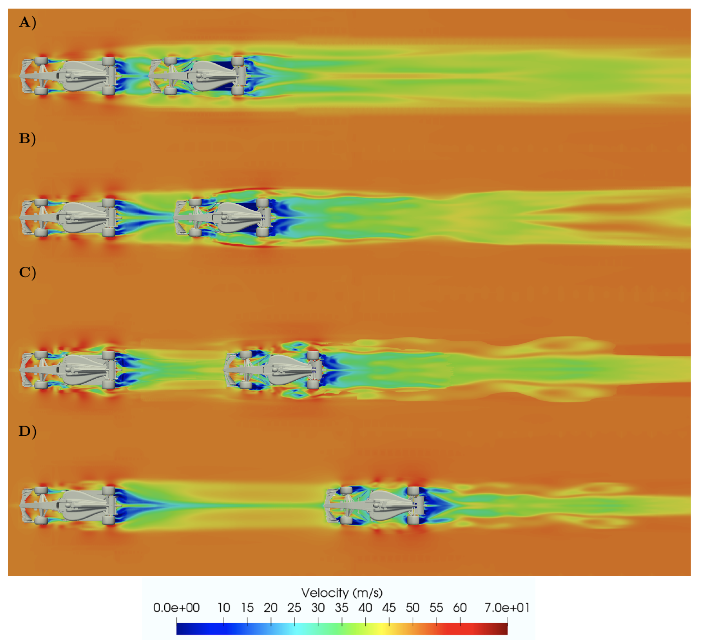

The floor of a Formula 1 car is a crucial component in its aerodynamic performance, significantly affecting downforce, drag, and stability at high
speeds. This paper examines how the floor's design influences airflow, emphasising principles such as ground effect, diffuser performance, and
vortex management. Using computational fluid dynamics (CFD) tools and wind tunnel testing, the study illustrates how floor geometry and ride
height impact airflow under the car. Results show that optimising the floor design improves cornering ability while reducing reliance on external
aerodynamic features, minimising drag. This research also explores the balance between technical innovation and adherence to strict F1 regulations,
demonstrating how engineers maximise performance within these constraints. The findings offer valuable insights into the application of aerodynamics
in motorsport, providing first-year aerospace students and lecturers with a real-world example of fluid mechanics principles in action.

Introduction
The Role of the Floor in the Aerodynamics of a Formula 1 Car
Aerodynamics plays a critical role in the performance of Formula 1 (F1) cars, and one of the most significant components affecting aerodynamic efficiency is the car's floor. In the context of modern F1 design, the floor has evolved to become one of the primary contributors to downforce, drag reduction, and stability, enabling cars to achieve extraordinary speeds while maintaining grip and balance through corners. This essay explores the fundamental principles governing the floor's role in aerodynamics, its design features, and how it has been influenced by technical regulations and innovation.
Understanding Ground Effect and the Floor's Function
Ground effect is the cornerstone of the aerodynamic performance generated by the floor of an F1 car. This phenomenon occurs when a vehicle moves close
to a solid surface, such as the track. The proximity to the ground alters airflow dynamics, creating a pressure difference between the upper and lower
surfaces of the car. This effect is particularly significant in F1 cars due to the carefully engineered design of the underfloor structures.
Aerodynamically, the floor functions as an inverted wing, where air traveling underneath is accelerated through narrowed pathways, reducing pressure
beneath the car. This pressure difference creates a "suction" effect, effectively pulling the car closer to the track. A properly optimized floor
increases downforce while minimizing aerodynamic drag, allowing the car to maintain higher speeds through corners without losing grip. The adoption of
ground effect principles in F1 design reduces drag by straightening the streamlines of airflow compared to those in free air. For instance, research
indicates that a wing operating close to the ground can generate the same downforce at a lower angle of attack compared to one in free air, as
demonstrated by the comparison of a 6° angle near the ground versus a 12° angle in free airign Features of the F1 Car Floor** The floor's design is
highly intricate, featuring a combination of channels, diffusers, and vortex generators. These elements work together to maximize downforce and
optimize airflow management. A primary feature of modern F1 floors is the incorporation of Venturi tunnels, which channel airflow under the car.
Venturi tunnels are designed with a wide inlet, a narrow constriction, and a widening outlet. As air passes through the narrow section, it accelerates,
reducing the pressure below the car and enhancing the suction effect. This design creates a powerful low-pressure zone beneath the car, allowing it to
"stick" to the track. The exit ramps of these tunnels also play a role in stabilizing the rear of the car by controlling the airflow as it exits .
To ensure the tunnels, teams focus on sealing the underfloor area to prevent airflow leakage. Vortices generated along the edges of the floor act as
barriers, maintaining the low-pressure zone under the car. Additionally, external lateral wings on the upper surfaces of the floor further enhance
this sealing effect. These features contribute to a balanced aerodynamic profile, ensuring that downforce is distributed effectively between the
front and rear tires .
The Impact of Regulatory
Technical regulations have significantly shaped the evolution of the F1 car floor. The 2022 regulations marked a pivotal shift, introducing new floor
designs aimed at improving wheel-to-wheel racing. The flat floors, which were mandated since 1983, were replaced with more complex Venturi tunnel
structures. These tunnels increased the proportion of downforce generated by the underbody, reducing reliance on upper aerodynamic components such as wings.
This regulatory change also addressed the issue of turbulence, a significant challenge for cars following closely behind others. By shifting the
source of downforce generation to the underfloor, the new designs create less disruptive air patterns, enabling cars to maintain aerodynamic
efficiency in close proximity to competitors. This improvement enhances overtaking opportunities and makes races more competitive. Additionally,
innovations in active floogies are emerging, with sensors and actuators allowing the floor to adapt in real-time to changing track conditions. These
technologies offer dynamic adjustments, optimizing performance based on temperature, humidity, and other environmental factors .
Performance Benefits of Optimising the Floor
The aerodynamic benefits of an optimized floor are multifaceted. First, the increased downforce improves cornering speeds by enhancing grip, allowing
drivers to maintain better control at high speeds. Second, the reduction in drag means that the car requires less power to sustain a given speed,
improving fuel efficiency and top-end performance. The floor also contributes to the overall aerodynamic balance of the car, ensuring stability during
braking, acceleration, and cornering. By generating a significant portion of the car's downforce, the floor reduces dependency on front and rear wings,
which are more susceptible to turbulence. This makes the car's performance more consistent, even in variable racing conditions .
Engineering Challenges and Future Directions
The floor presents numerous engineering challenges. One key challenge is achieving the right balance between maximizing downforce and adhering to strict
FIA regulations. Engineers must work within prescribed limits for the size, shape, and placement of the floor, often requiring innovative solutions to
extract maximum performance. Another challenge is managing the airflow around and under the car to ensure that the floor functions optimally. Any
disruption to this airflow, such as from debris on the track or damage during a race, can have a significant impact on performance. Teams invest heavily
in wind tunnel testing and computational fluid dynamics (CFD) simulations to refine their designs and account for such variables .Looking ahead,
advancements in materials and adaptive technologies could f floor design. Lightweight, durable materials may enhance the structural integrity of the
floor while minimizing weight penalties. Meanwhile, developments in active aerodynamics could enable floors to respond dynamically to race conditions,
offering even greater performance gains.
Conclusion
The floor of a Formula 1 car is a masterpiece of aerodynamic engineering, playing a critical role in the performance and stability of these high-speed
machines. By leveraging principles of ground effect and incorporating advanced design features such as Venturi tunnels and vortex generators, the floor
contributes significantly to downforce generation, drag reduction, and overall balance. Regulatory changes and technological innovations continue to
push the boundaries of what is possible, ensuring that the floor remains a focal point of F1 car design.